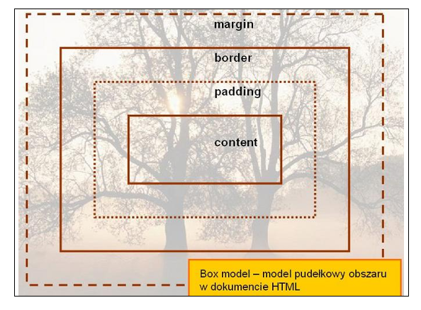
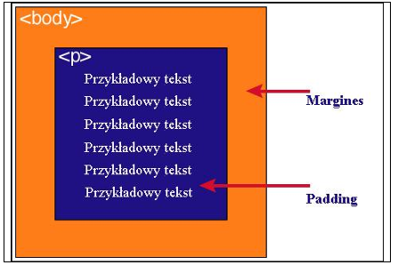

Każdy element w dokumencie HTML, otacza się prostokątnym obszarem zwanym pudełkiem
(ang. Box model). Pudełko składa się z kilku warstw:
zawartość modelu pudełkowego:
"content" – zawartość elementu (np.: tekst, obrazek)
"padding" - otaczające marginesy wewnętrzne, odstęp między obramowaniem i
zawartością elementu
"border" – obramowania wokół zawartości elementu, ma styl i kolor.
"margin" – marginesy wokół ramki (margines zewnętrzny). Jest to pusty obszar wokół
ramki, który nie ma koloru tła i jest przeźroczysty.
Wykonaj oraz uzupełnij tabelę:
zawartość
Opis
content
Właściwa zawartość elementu, np. tekst lub obraz.
Podaj dwie uwagi na temat modelu pudełkowego.
Uwaga1 - Padding, border i margin mogą mieć zerową wartość.
Uwaga2- Tło elementu jest określone dla wszystkich z podanych powyżej obszarów z wyjątkiem
marginesów zewnętrznych, które zawsze są przezroczyste (transparent).
Wstaw grafikę obrazującą model pudełkowy.

Wstaw grafikę obrazującą różnicę pomiędzy paddingiem i marginesem wraz z opisem.

Jak widać na rysunku, padding oznaczony jest kolorem niebieskim. Określa on wielkość
przestrzeni wokół elementu
. Element ten posiada również margines zaznaczony kolorem
pomarańczowym. Jest to odległość od brzegu elementu